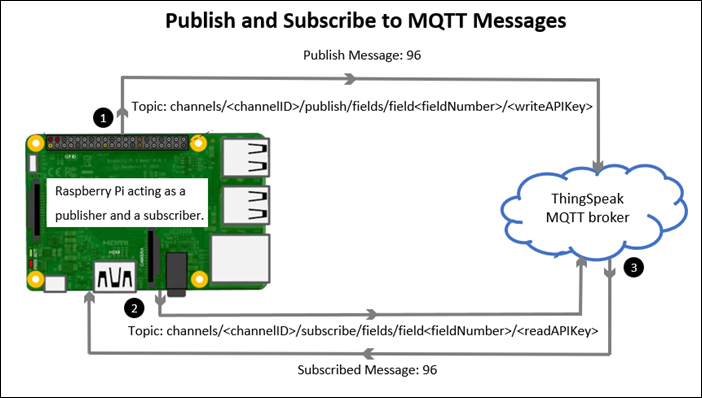
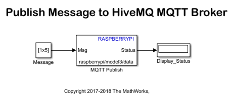
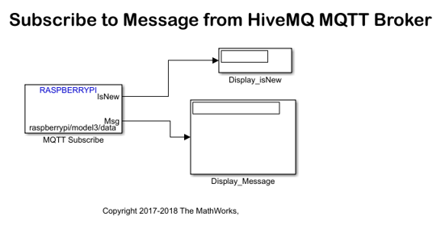
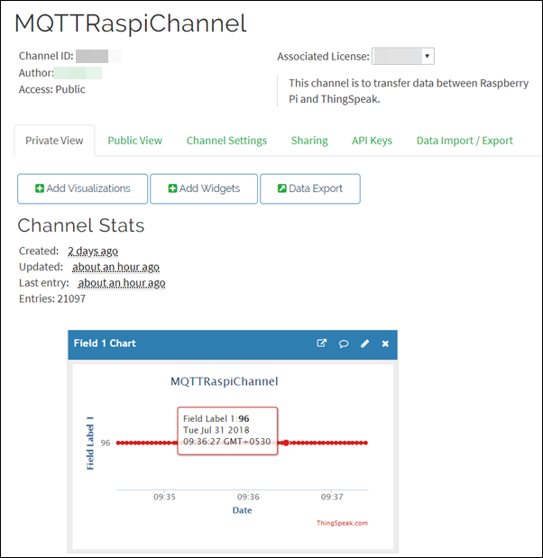

Publish and Subscribe to Messages on ThingSpeak Using MQTT Blocks
Contents
- Introduction
- Prerequisites
- Required Hardware
- Step 1: Connect Raspberry Pi to the Computer
- Step 2: Open the Simulink Model to Publish the Message
- Step 3: Open the Simulink Model to Subscribe to the Message
- Step 4: Configure the Publish and Subscribe Model
- Step 5: Run the Publish Model in Normal Mode
- Step 6: Run the Subscribe Model in External Mode
- See Also
This example shows you how to publish and subscribe to messages from a ThingSpeak broker using MQTT blocks provided by the Simulink® Support Package for Raspberry Pi™ Hardware.
Introduction
Message Queuing Telemetry Transport (MQTT) is a publish-subscribe architecture developed primarily to connect bandwidth and power-constrained devices over networks. MQTT has two components: an MQTT broker and an MQTT client.
An MQTT broker is a central point of communication and dispatches all messages between the clients. An MQTT client is a device (for example, a computer or mobile phone) that connects to the broker. A client that sends messages to the broker is a publisher. A client that receives messages from the broker is a subscriber. For more information on MQTT, see Publish and Subscribe to MQTT messages.
In this example, ThingSpeak is the MQTT broker, and Raspberry Pi™ is the MQTT client (publisher and subscriber).
This example has two Simulink® models, Publish_MQTT_messages and Subscribe_MQTT_messages. In this example, you will learn how to publish a message from Raspberry Pi™ to the specified topic in the ThingSpeak MQTT broker. Also, you will learn how to subscribe to the specified topic, and then receive the published message from the ThingSpeak MQTT broker to the same Raspberry Pi™ hardware. This is a loopback message transfer.

Prerequisites
Before you start with this example, we recommend you complete:
Required Hardware
- Raspberry Pi™ hardware
- Micro USB cable
Step 1: Connect Raspberry Pi to the Computer
1. Connect the micro USB cable into the micro USB port of the Raspberry Pi™ hardware.
2. Connect the other end of the cable to your computer. Wait for the power LED on Raspberry Pi™ to stay solid.
3. Connect the Ethernet port of Raspberry Pi™ to a LAN having an Internet access.
Step 2: Open the Simulink Model to Publish the Message
1. Open the Publish_MQTT_messages model.
In this model, the MQTT Publish block accepts a message of uint8 data type to be published to the broker.
2. Double-click the MQTT Publish block. The parameter values are specified as:
Parameter | Value | Description
---------------------------------------------------------------------------------------------------------------------------------------------
Topic | channels/12345/publish/fields/field1/XXXXXXXXXX | The topic to which Raspberry Pi publishes the message.
| | The topic must follow the format:
| | channels/<channelID>/publish/fields/field<fieldNumber>/<writeAPIKey>
| | In this example,
| | * channelID is specified as 12345.
| | * fieldNumber is specified as 1. You can specify any number from 1 to 8.
| | * writeAPIKey is specified as XXXXXXXXXX.
QoS | 0 | The ThingSpeak MQTT broker supports only QoS 0.
Retain Msg | off | The ThingSpeak MQTT broker does not support retain message flag.For information on how to find Channel ID and Write API Key of your channel, see ThingSpeak Parameters.
3. Click OK.
Step 3: Open the Simulink Model to Subscribe to the Message
1. Open the Subscribe_MQTT_messages model.
2. Double-click the MQTT Subscribe block. The parameter values are specified as:
Parameter | Value | Description
------------------------------------------------------------------------------------------------------------------------------------------------------------
Topic | channels/12345/subscribe/fields/field1/YYYYYYYYYY | The topic to which Raspberry Pi subscribes.
| | The topic must follow the format:
| | channels/<channelID>/subscribe/fields/field<fieldNumber>/<readAPIKey>
| | In this example,
| | * channelID is specified as 12345.
| | * fieldNumber is specified as 1. You can specify any number from 1 to 8.
| | * readAPIKey is specified as YYYYYYYYYY.
QoS | 0 | The ThingSpeak MQTT broker supports only QoS 0.
Message length (N) | 1 | The length of the message to be received.
Sample time | 1 | Raspberry Pi(TM) receives the message from the ThingSpeak MQTT broker every one second.For information on how to find Channel ID and Read API Key of your channel, see ThingSpeak Parameters.
3. Click OK.
Step 4: Configure the Publish and Subscribe Model
1. Open the Publish_MQTT_messages model.
2. In your Simulink® model, click Simulation > Model Configuration Parameters.
3. In the Configuration Parameters dialog box, select Hardware Implementation.
4. Set the Hardware board parameter to Raspberry Pi. This selection automatically populates the parameters in the Hardware board settings with the default values for Raspberry Pi™.
5. From the Groups list under Target hardware resources, select MQTT and verify these settings:
- Broker Address: Specify the address of the ThingSpeak MQTT broker, mqtt.thingspeak.com.
- Username: For ThingSpeak broker, Username is not required.
- Password: Specify the MQTT API Key of your ThingSpeak account. If you do not know the MQTT API Key, sign in to ThingSpeak and go to Account > My Profile.
- Client ID: Client ID is optional.
6. Click Apply to save your changes, and click OK.
7. Open the Subscribe_MQTT_messages model and repeat all the steps as described in this section.
Step 5: Run the Publish Model in Normal Mode
1. In your Simulink® model, click the Deploy to Hardware button. The lower left corner of the model window displays the status while Simulink® prepares, downloads, and runs the model on Raspberry Pi™. The model is deployed as a standalone application on Raspberry Pi™. After the model is successfully deployed, Raspberry Pi™ publishes the message to the Field 1 of the ThingSpeak MQTT broker.
2. To view the published message on the broker, select to Channels > My Channels, and then click the channel on which the message is published.

Step 6: Run the Subscribe Model in External Mode
1. In your Simulink® model, set Simulation mode to External. The Simulation stop time is specified as inf.
2. Click the Run button. The lower left corner of the model window displays status while Simulink® prepares, downloads, and runs the model on Raspberry Pi™. After the model successfully starts running, Raspberry Pi™ subscribes to the messages in the Field 1 of the ThingSpeak MQTT broker and receives the message. The Display_Message block displays the received message.